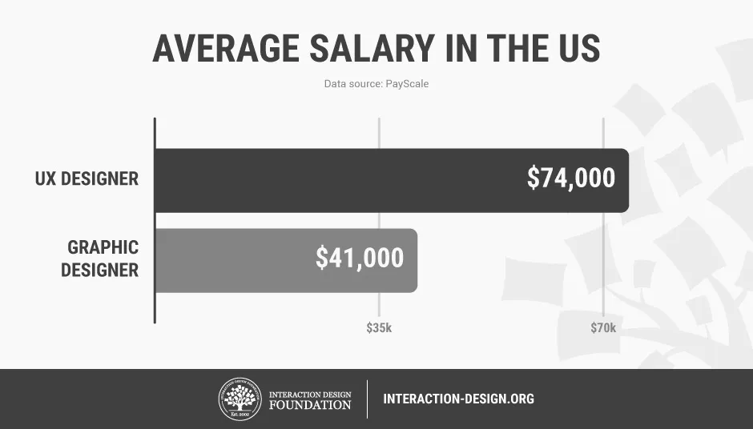

If there’s an occupation that is 100% linked with the public’s idea of what design is all about, it’s graphic design. From the familiar golden arches of the McDonald’s brand to the typography and colors of movie posters, graphic designers create some of the most iconic and ubiquitous designs around us. So why would a graphic designer like you want to change your career to UX design? Well, for one, much can be said about the sense of satisfaction and fulfillment derived from getting “under the hood” of the products you work on rather than working on the exterior. Furthermore, according to PayScale, the average salary for a graphic designer in the United States is $41,000(1), but the same for a UX designer is a whopping $74,000(2).
Whatever the reason for the move, it’s clear that it can be a very rewarding one. But how do you go about switching from graphic design to UX design? Let’s find out.
The user experience (UX) is what a user of a particular product experiences when using that product. A UX designer’s job is thus to create a product that provides the best possible user experience. How does that happen?
Well, it starts with a lot of research. You can’t create anything of value to a user unless you understand what kind of problems they want to solve and how you can solve those problems, so that the user will want—or better still, need—your solution. You can only get that understanding by interacting with users.
UX designers tend to be concerned with, as you can see from the image below, 3 primary factors: the look of a product, the feel of that product and the usability of that product.
Emotional Design
Creative thinking
Prototyping